注 意 事 项
图 例
说 明
改 进 前
改 进 后
薄壁平构件的结构要满足输送要求，构件应能互相接触而不阻碍移送
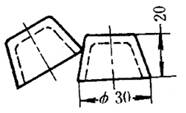
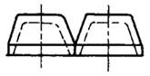
左图锥部极易相互重叠而发生堵塞；改进后把构件下部设计成圆柱形，可以防止构件重叠及堵塞
平薄小，不规则等构件必须以固定位置输送给下道工序
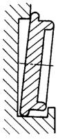

左图输送位置不正确，右图构件处于正确输送位置
零件形状应便于装卸运输
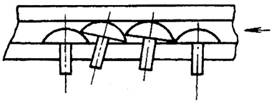
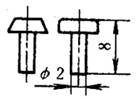
圆柱头铆钉比圆头铆钉易于装卸、装配
加工表面应设计在一个水平面上
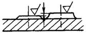
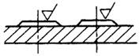
右图加工可一次完成，左图则需两次完成
注 意 事 项 |
图 例 |
说 明 |
|
改 进 前 |
改 进 后 |
||
薄壁平构件的结构要满足输送要求，构件应能互相接触而不阻碍移送 |
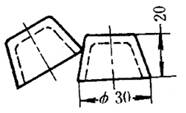 |
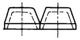 |
左图锥部极易相互重叠而发生堵塞；改进后把构件下部设计成圆柱形，可以防止构件重叠及堵塞 |
平薄小，不规则等构件必须以固定位置输送给下道工序 |
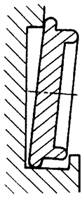 |
|
左图输送位置不正确，右图构件处于正确输送位置 |
零件形状应便于装卸运输 |
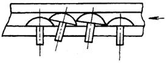 |
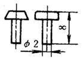 |
圆柱头铆钉比圆头铆钉易于装卸、装配 |
加工表面应设计在一个水平面上 |
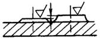 |
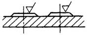 |
右图加工可一次完成，左图则需两次完成 |